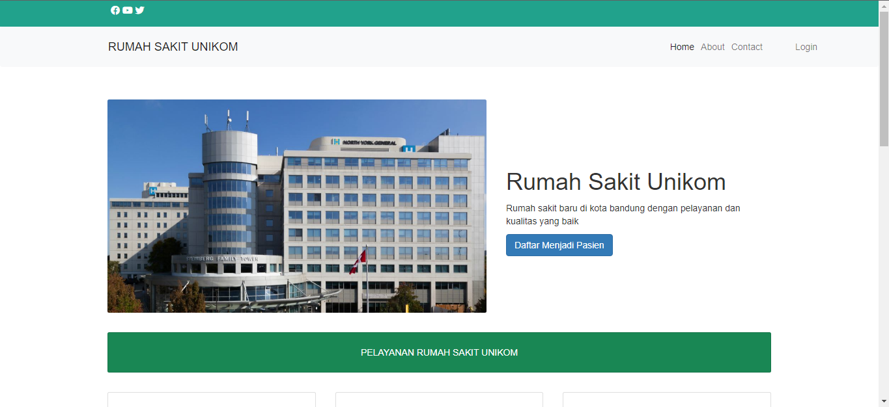
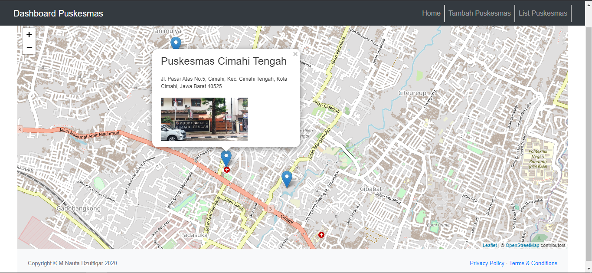
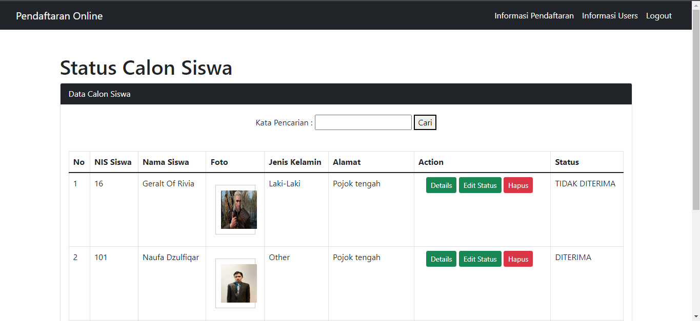
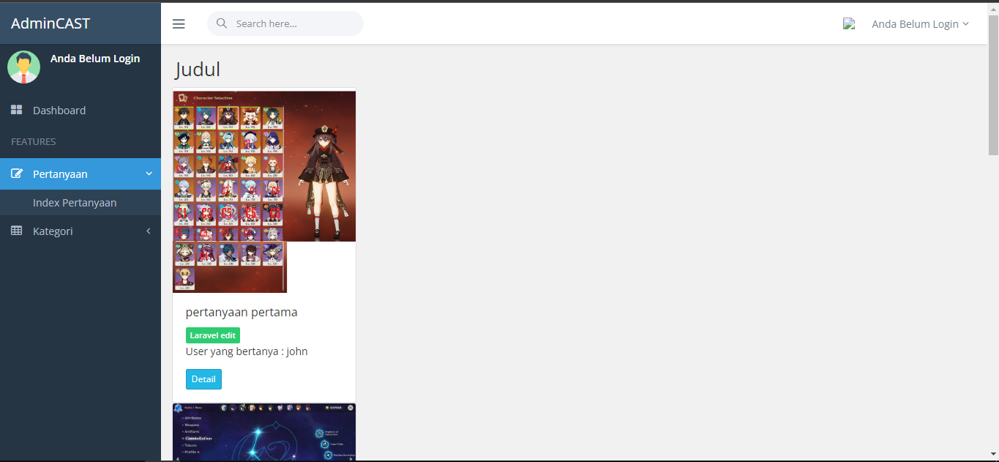
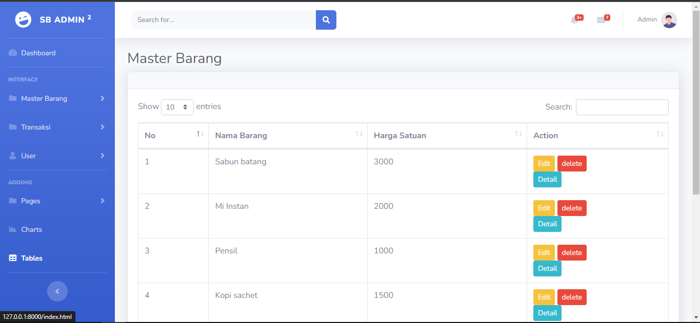
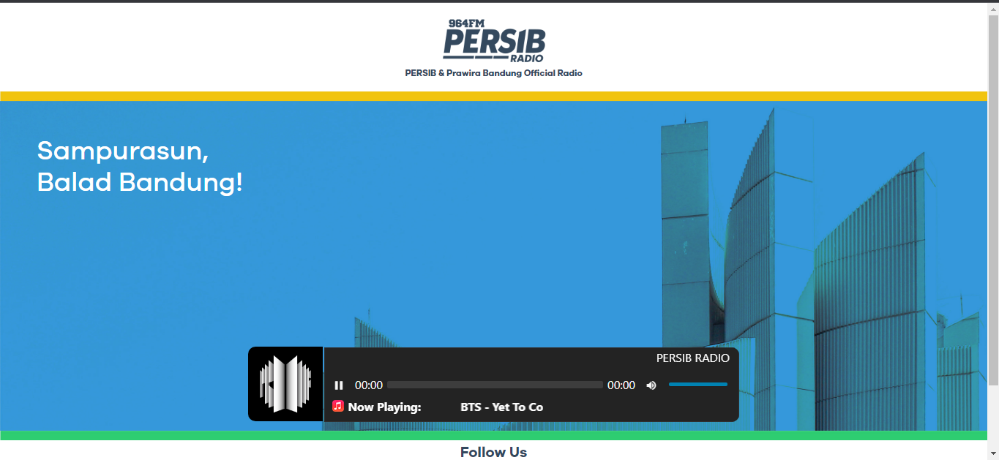

Berikut Beberapa Portofolio Project yang telah saya buat Di bawah ini adalah website pendaftaraan
rumah sakit online

Website Ini adalah sebuah project untuk tugas akhir UAS saya, website sini sudah dinamis. beberapa
Fitur website ini adalah : Daftar User, pendaftaraan Pasien dan lain-lain
website ini dibangun dengan : PHP Native, CSS, Bootsrap, Mysql, HTML
Link Github Website ini :
https://github.com/johnnydzulfiqar/rumah_sakit
Sistem Informasi Geografis Puskesmas Kota Cimahi

Website ini adalah sebuah tugas dari mata kuliah Sistem Informasi Geografis website ini sudah dinamis
dan terkonekasi database, marker-marker puskesmas tersebut sudah CRUD
Fitur website ini adalah : Add marker puskesmas berdasarkan koordinat
website ini dibangun dengan : PHP Native, CSS, Bootsrap, Mysql, HTML
Link Github Website ini :
https://github.com/johnnydzulfiqar/sig_puskesmas_cimahi
Website Untuk sertifikasi Junior web Developer BNSP

Website ini adalah sebuah submission untuk kelulusan dari sertifikasi junior web developer BNSP,
website ini mengantarkan penulis mendapatkan sertifikat dari BNSP
Fitur website ini adalah : Role login 2 akun antara admin & siswa, pedaftaraan siswa, konfirmasi
status siswa dan laih-lain
website ini dibangun dengan : PHP Native, CSS, Bootsrap, Mysql, HTML
Link Github Website ini :
https://github.com/johnnydzulfiqar/bnsp
Website Forum Tanya jawab Laravel Jabar coding camp

Website Tugas akhir dari jabar coding camp laravel, website ini adalah website forum tanya jawab,
dimana user bertanya suatu topik dan user lain akan menjawab topik tersebut.
Fitur website ini adalah : Daftar user, bertanya suatu topik, menjawab pertanyaan, melakukan
CRUD pada jawaban dan pertanyaan
website ini dibangun dengan : Framework Laravel, CSS, Bootsrap, Mysql, HTML
Link Github Website ini :
https://github.com/johnnydzulfiqar/jabar_coding_forum
Website Kasir Laravel Jabar coding camp

Website Tugas akhir dari jabar coding camp laravel, website untuk mengolah data keungan kasir.
Fitur website ini adalah : 2 role user kasir dan admin, CRUD transaksi daftar barang dan
lain-lain
website ini dibangun dengan : Framework Laravel, CSS, Bootsrap, Mysql, HTML
Link Github Website ini :
https://github.com/johnnydzulfiqar/aplikasi_kasir
Website Persib Radio

Website adalah tugas magang ketiga penulis melakukan magandi Pt.Persib Bandung Berwibawa
Fitur website ini adalah : Streaming Radio Online Persib
website ini dibangun dengan : HTML,CSS
Link Github Website ini :